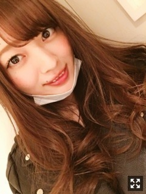
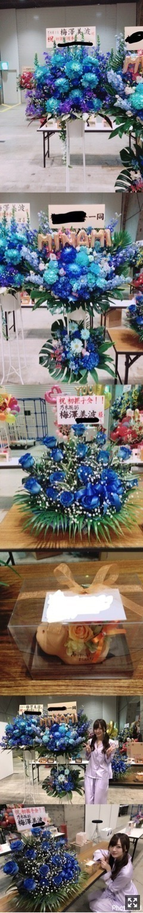
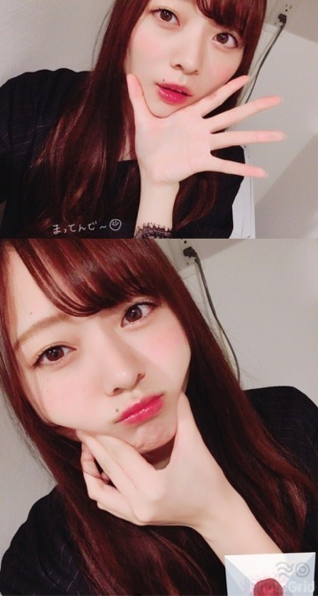
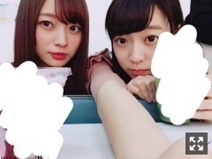

がんばりかた。梅澤美波
皆様こんにちは！！
乃木坂46 ３期生の
梅澤美波です！！

ていっ
髪の毛痛みすぎてるからちょっと切りたい
最近暑くて溶けそう( ¨̮ )
昨日の夜は風が寒くて
ずっと外にいたかったな〜
地元の農道で星空を見ていたいなあ
最近毎日毎日秒のように去ってゆくから
あっとゆう間だったよ☺︎
みんな頑張ってる〜？？( .. )
握手会で会えるまでもうすぐだよ〜！
(今週行かないって方は
もうちょと待ってな)
この前街を歩いてたら
また20代だと間違われましたあ〜
そんなに老けてる？？( .. )（笑）
まずは個別握手会ありがとうございました！
本当にね、めちゃくちゃ
楽しかったの（ ｉ _ ｉ ）！！
色んな方が来てくださって
いろんなお話ができて
とても幸せな時間だったよ〜
すごい楽しかったんだけど
みんな楽しかったかなあ( .. )

まさか自分に
こんなにお花が届いてるなんて思わないじゃない（ ｉ _ ｉ ）
レーン着いた途端
びっくりして、きゃー！！！ってなった( .. )
たくさんありがとうね（ ｉ _ ｉ ）
お花大好きなの！
だから本当に嬉しくって幸せだったよ。
しかもね、サイリウムカラーなの。
愛が沢山詰まってる〜（ ｉ _ ｉ ）
幸せものだな〜って、
本当にずっと思ってた！
握手してる後ろにさ
こんなに可愛いお花が飾ってあるの
素敵だよね、本当に
ありがとうございます。
会いに来てくれるだけで嬉しいのに
ありがとうね（ ｉ _ ｉ ）
あとね顔覚えるの得意みたいで
何回も来てくれる方は覚えちゃって
馴れ馴れしく話しちゃった( .. )ごめんね
握手会ね、
アンパンマンのモノマネしてー！
とか
だいふくみなみして！
とか
ほっぺ伸びるの見たい〜
ってリクエスト結構あった( ¨̮ )（笑）
みんなほっぺた好きすぎかよ〜( .. )（笑）
1.2部終わって5部までりりあとずっと待ってたのね( ¨̮ )
目の前に座っててね
すごい癒されるよ〜りりあは。
私の妹〜
日曜日の個握も一緒に待つから
写真撮って次載せるね〜
そうそう、その個握でね
衛藤さんが後ろの席だったんだけど
たくさん話しかけてくださりました（ ｉ _ ｉ ）
いつも優しく話しかけてくださるの。
人見知りで自分から何も出来ない私だから
本当に嬉しくて嬉しくて。
アドバイス頂いたから
参考にするの( ¨̮ )♡
いつでも相談してねーって（ ｉ _ ｉ ）
衛藤さんみたいなお姉様がいたら
絶対幸せだろうな〜
って話してていつも思う( .. )
日曜の握手さ
パジャマどうしようかな( .. )
千葉の時と同じので髪型だけ変えるとかだと
嫌だ？？
服悩み中( .. )
それでね
アルバムの個握が今日から応募始まったみたいです！！
アルバムの個握参加はもちろん初めて！
すごく楽しみだ〜（ ｉ _ ｉ ）
皆様来てくれるかな〜( .. )
少しでも気になってるってゆう方は
ぜひ☺︎
楽しい握手会にしようね〜☺︎
いろんな方にお会い出来たら
嬉しく思います！！
会いにきてね( ¨̮ )

まってんで〜
だいふくぱーとつー
（笑）（笑）
あと、個握を購入してくださった方に
抽選で5／24日、日比谷野外音楽堂にて３期生単独公演に無料ご招待するイベントが決定しました！！
無料ご招待とのことなので
この機会にぜひ！！頑張ります！！
ペアは憧れでもある白石さんに紹介していただきました。
打ち合わせから終始優しくて、
すごく真剣に考えてくださっていたんです、お忙しいのに本当にありがたくて嬉しくて、
やりたいこととか嫌なことがあったら言ってねって言ってくださったり
打ち合わせが終わった後も
身長のこと褒めてくださって
絶対活かすべきだよ！いいことだよ
って
素敵な方だなあって身近ですごく感じます。
こんなに素敵な企画でご一緒させて頂けて
本当に嬉しかったです。
白石さんの写真集定期的に見てるの☺︎
発売日に予約してて買ったのがあったんだけど
講談社さんから頂いたのもあって
見るよう保管用があるんだ〜( ¨̮ )
ビンゴさんも見てくださいましたか？？
私は足つぼでした！！
初め全然痛くなかったんだけど
土踏まず押された瞬間めちゃくちゃ痛くて（ ｉ _ ｉ ）
終わったあとは、暑くて仕方なかった（ ｉ _ ｉ ）
nogiroomさんも出てるのでまだの方は
ぜひ見てね☺︎
次回もお楽しみに〜
絶賛リハーサル中です。
本当に絶対楽しめると思います！
めちゃくちゃ面白いと思う！
飽きさせないような、
ずっと楽しんでてもらえるような、
絶対チケット当ててきてよね〜
サイリウム全部見つけるからね☺︎
アイアシアターって、めちゃくちゃ見えるの
後ろの方まで本当に
だから全員見つけるからね！！
れんかが本当にかわいい
妹みたい本当の
みなみ〜って甘えてくる時があるの
幸せ
れんたん〜
あとれのちゃんの笑った顔
最高に大好きなんだよね( .. )

質問返し！！
Q.ショートにたことある？
A.小学校ぐらいの時かなあ？１回だけあります！！それからはずっとロングかなあ( .. )
Q.文化祭、体育祭どっち派？
A.選べない〜( .. )高校が体育祭がなかったから中学以来なんだけど、走るのは苦手だけど二人三脚とかみんなでやる感じすごく好き！！文化祭はずっと食べてる（笑）
Q.好きなラーメンの味は？
A.とんこつがすき◎
Q.関西人にはどういう印象？
A.関西弁がすごくすきです◎！あとは話しやすいイメージがある！！フレンドリーなのかなって( ¨̮ )
Q.握手会であだ名つけてくれる？
A.全然つけます！！けど、センスないし時間かかっちゃうけどごめんね（ ｉ _ ｉ ）
女の子☺︎
Q.アイシャドウ何使ってる？
A.アディクションのザ アイシャドウを使ってます！
Q.メイクが苦手なんだけど、どうやって勉強してる？
A.メイク始めたばっかりの頃は、とりあえず安いものを買って集めて、雑誌を読みまくって勉強してたかなあ〜でもメイク動画が分かりやすくて１番いいなって思うよ( ¨̮ )
今は充実してる日々がほとんどで
風のように毎日去ってゆくんだけどさ
何年後何十年後に振り返ったら
貴重な若さなんだな〜と思うと
本当に大切に過ごしたいなって思うの( ¨̮ )
急になんだって感じだよね( ¨̮ )（笑）
何気ない日でも
毎日記録できる脳みそがほしいんだ〜（笑）
どんな時も日も忘れたくない〜
コメントたくさんありがとうございます。
握手会の事書いてくださる方たくさんいて
あ！あの方だ！とか
思い出しながら読んでたら
楽しくって仕方なかった◎
いつも元気もらえます、ありがとう
ちらりずむ
日曜楽しみにしてるね☺︎
ばいばい
口に出していることが全てではないし
上手くいくことばかりではないけど
だからこそいいことがあった時は倍に嬉しいの〜
自分に合ったものがみつかるはずだから
それまで全力で走りまくるぞ〜
私を応援してくれてる方には申し訳ないけど、時間がかかるかもしれないけど少しずつ、登っていけるようにね、待っててください
Original：https://www.nogizaka46.com/s/n46/diary/detail/38203?ima=0530&cd=MEMBER